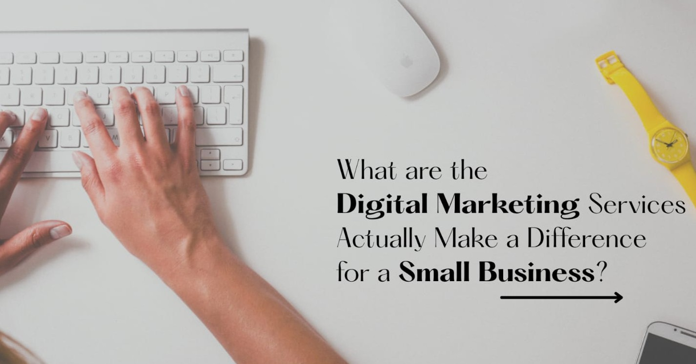

What are the Digital Marketing Services Actually Make a Difference for a Small Business?
Author : Seite Digital Marketing Team
Updated on Oct 01, 2026 | 5 mins read
Hey all, Wondering which digital marketing solutions for small businesses are worth the money? This blog
guide on what works, why, and where to begin.
Every small business owner faces the same problem either sooner or later. Someone says that your business
needs SEO. Someone else says Instagram is everything. On other hand, a third person insists ads are the only
quick route. More and more confusion. Meanwhile, your budget is limited and your day is already full. This
is the problem that every small business owner is facing.
So which digital marketing solutions for small businesses genuinely make a difference, and
which ones just
really work?
Come let's go through it one question at a time
1. What are the services that actually help for a small business?
`
Out of the long menu agencies offer, six consistently deliver for smaller businesses.
- Google Business Profile (GMB): A complete, accurate profile helps customers find your
business on Google Search and Maps.
- Website development: Your website is your 24/7 online shop, helping customers learn
about your business, explore your services and contact you.
- Search visibility (Local SEO): Local SEO services help your business appear when people
in Chennai or your service area search for what you offer.
- Helpful content (Content Marketing): Blogs and FAQs answer customer questions and
support your visibility in Google search results and AI-powered search.
- Regular social media presence (Social Media Marketing): Consistent posts keep your
business familiar to potential customers and help them remember you when they need your services.
- Targeted paid advertising (PPC and Google Ads): Well-targeted ads can generate
enquiries quickly when your audience, location and offer are clearly defined.
- Customer follow-ups: WhatsApp messages, short emails and review requests help you stay
connected with past customers, encourage repeat business and build trust.
2. Why do these services make a difference?
Because they follow how people actually decide.
Think about the last time you needed a service. You probably searched for it, scrolled through a few
reviews, checked their Instagram, and then called. Each service above covers one of those moments. If one is
missing, the customer's path gets a little shakier.
That's why so many small businesses feel let down by marketing. It's rarely the channel that fails. It's
that nothing connects it to a real goal. Bought followers, five platforms handled halfheartedly, or ads that
land on a confusing website all quietly burn money. When the basics are in place and each service has a
clear job, even a modest budget starts to work harder.
3. Where should you focus your effort?
You don't need to be everywhere. Be where your customers already are.
- Google and Maps: best for clinics, salons, accountants, tutors, repair and home
services, and anyone people search for by need or location.
- Instagram and Facebook: best for food, fashion, beauty, décor and anything people enjoy
looking at.
- LinkedIn: best if your customers are other businesses.
- WhatsApp: best for quick questions, quotes and repeat orders.
Two channels done steadily will beat six done occasionally. Not sure whether to begin with search or social?
Read our guide on
seite blogs.
4. When should you invest in each one?
Start with the right things first.
-
First, get the basics ready. Fix your profile, tidy your website, and make sure a
visitor can
contact you in one tap.
-
Next, build trust. Publish useful answers to the questions customers ask you like
feedback, post
regularly, and gather honest reviews.
-
Then, add speed. Once the above is in place, test a small ad campaign and begin
follow-up messages
to past customers.
Here's a quick example,
A home bakery owner in Chennai or in your native place with ₹10,000 a month should not put it all into ads
on day one. If the Google listing is incomplete and the Instagram page has no ordering link, those ads will
send people into a dead end. Sort the listing and the ordering link first, then you should start promoting.
Also remember the timelines.
Generally, Ads can bring responses within days, social media builds over weeks, and SEO usually takes a few
months depending on the business.
5. How do you decide and keep it on track?
- Where do my customers currently come from?
- Do people actively search for what I offer, or do they discover my business by chance?
- Can I realistically keep posting content and replying to customers every week?
- How quickly do I respond to customer enquiries?
- What will I measure as success - calls, WhatsApp chats, enquiries, or bookings - rather than likes
and followers?
Review the numbers monthly, keep what brings enquiries, and drop what doesn't. A trustworthy
digital
marketing agency in Chennai SEITE should be happy to explain this in plain language and set
honest
expectations instead of making big promises.
In short
The services that matter most are the ones that help a stranger find you, feel confident about you, and
reach out without effort. Everything else is optional until those are working.
Start small, stay consistent, and measure what actually brings customers.
If you'd like a second opinion on where to start, the team at
Seite, a digital marketing
company in Chennai,
can look at your current setup and suggest an affordable plan across website, search, content, social and
ads.
Learn more
About us, or
Request a consultation
whenever
you're ready.
1. Which digital marketing services are best for a small business?
A well-kept Google Business Profile, a mobile-friendly website, local SEO,
helpful content, consistent social media, and follow-up with existing
customers are great starting points. Paid ads can come later once these
essentials are ready.
2. Why do some digital marketing efforts fail?
Digital marketing often fails because there is no clear goal, the website
cannot convert visitors into customers, or enquiries are answered too late.
A clear strategy and timely follow-up can make a big difference.
3. Where should a small business put its marketing effort?
Focus on the platforms your customers already use. For most service
businesses, Google is a great place to start, while visual businesses can
benefit from platforms like Instagram.
4. When is the right time to start paid ads?
Start paid advertising when your offer is clear and your website or
WhatsApp link makes it easy for potential customers to enquire.
This helps you make better use of your advertising budget.
5. How much should a small business spend on digital marketing?
The budget depends on your industry, competition, and business goals.
Many small businesses start with a modest monthly budget for two or three
core services and increase spending as they begin to see results.
6. How long does SEO take to show results?
SEO generally takes a few months to show noticeable results. The timeline
depends on your competition, website quality, content, and the consistency
of your SEO efforts.
7. SEO vs PPC: Which should a small business choose?
PPC can generate leads faster while your advertising budget is active,
whereas SEO builds organic visibility over time. Many small businesses
start with one approach and add the other as their needs grow.